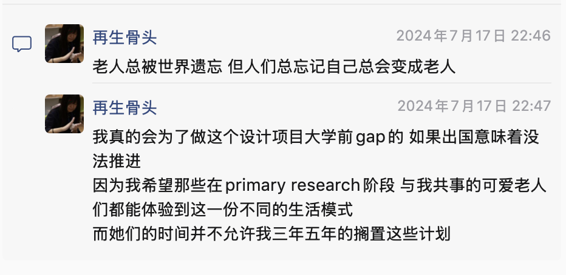

项目概要
失能老人约束手套
这是一个关于临终关怀的设计项目。它贯穿了我高中后两年的设计课业，也是我选择在高三后 gap 一年、再去上大学的主要原因。
我想做的不是一个“更好看的约束工具”，而是：在不得不约束的时候，怎么把舒适、安抚与自主权还给被护理的人。

关键进展
- 背景调查：已完成
- 专利布局：中国实用新型申请中
- 产品迭代：V3 已完成
- 请教专家：2 家护理院相关护理护士；Shanghai NYU 的 Minki、Rudi 教授
- 路演融资：已完成
当前聚焦阶段
小批量正式产品生产验证（2026 年 4 - 6 月）。
时间线
- 小批量生产（非医疗器械）：进行中（2026 年 4 - 6 月）
- 产品上市：2026 年 7 月
- 医疗备案：取决于市场（2027）
- 产品线扩展：取决于市场（2028）
行动的契机
高二那年，小区大铁门砸伤我的奶奶。做了换关节手术后，她住进护理院。我周末回去陪她，在护理院过了一晚。四张病床，四位老人，还有在门口搭床睡觉的护工。为什么睡在门口？因为半夜一旦有人意识不清往外跑，得有人第一时间发现，防止走丢或跌倒。
那天白天，奶奶很有精神，康复训练还和我一起多走了一圈。晚上她早早睡着，我却因为睡眠浅，一直醒着。半夜，我听见喃喃自语和床栏的敲击声。转过去，看见隔壁床的老人前后摇晃，再隔壁床的老人挥舞着手敲床栏。我这才注意到，她们的手被限制住了。
第二天白天再看见，原来那是两双蓝色的约束手套。护工告诉我：左边那床的小春总想回家、总往外跑；右边那床的小曹下半身瘫痪，旧伤反复，沟通也很困难。约束手套起到了缓冲作用，却没有回答另一个问题：她们夜里真正承受的，到底是什么？这一切是否存在另一种可能？我决定从这里开始调查，也开始了后续的陪伴与观察。

背景调查
约束是现实护理中被频繁使用的工具。它通常出现在失能、意识波动、存在跌倒、自伤、意外拔管等风险的场景里。没有约束，风险会发生；有了约束，新的伤害也会出现。
没有约束时，风险可能来自
- 跌倒
- 自抓、自伤
- 意外拔管
- 其他护理不良事件
有约束后，新伤害可能来自
- 躁动与心理痛苦
- 活动空间被压缩
- 对挛缩手型贴合不足
- 严重不良事件，包括手指坏死与致命窒息
一个让我无法忽视的例子
2022 年国内有一起公开可查的事故：老人的手在网纱内部被“手指约束环”卡住坏死，一周后才被发现。对护理端的要求原本是“每 2 小时拆开手套检查手部情况”，但在高强度的现实护理环境里，这件事并不容易稳定做到。设计不能把关键风险完全压给使用者，而应该尽量从结构上减少盲区，例如让手部情况能够被看见。
查看公开报道 ↗约束与长期卧床的普遍性
我拜访的护理院践行着“最少约束”原则。即便如此，院内仍有 39% 的老人佩戴约束手套；佩戴约束手套者中，92% 同时伴随长期卧床。院内老人中，53% 存在长期卧床情况，而这部分人中有 68% 佩戴约束手套。
这些数据说明，在我实际进入的护理院环境里，约束手套并不是少数场景，而是一种相当普遍的护理现实。它不会因为我们不看见，就不继续存在。
陪伴日志
那周我再去护理院时，奶奶已经出院。新一床的老奶奶是一位眉眼弯弯的听障者，戴着约束的仍然是小春和小曹。我辅助喂小曹吃流食，动作不熟练，但一口一口地鼓励她“吃下去，身体会有力气一点”。她用力点头，回应着“好，好，好”。
喂完饭，我帮她擦嘴，试着和她聊天。她会重复简短的词，却完全能被听明白。我听见她说“厉害 厉害”，也听见她说“这疼 这疼”。我在她手臂边轻轻按压，问她是不是这里疼，她几乎每一处都说“是”。有时候她想抬手抓脸，蓝色的手套边在脸上剐蹭。我拿纸巾替她轻轻碰触脸颊，她忽然说：“你真好。”
那一刻我想，她一点都不糊涂。
小曹
护工告诉我，她的家人早已去了国外，平时很少有人这样长时间地陪她。她最常说的一句话是“别走”。只要我站在她旁边，她的眼睛就会重新有神，手上的挣扎也会少一些。一旦我们因为午休和工作离开，她便重新对着天花板呢喃、呻吟、敲打。约束手套能缓冲碰撞，却缓冲不了她真正想表达和真正承受的东西。
小春
小春第一次见我时把我当成小偷，叫我滚出去；第二次见我又亲切地拉着我，介绍窗外的大楼。她的家人一周会来好几次，给她带饭、洗漱、陪伴。可她半夜总想往外跑，家里人拦得住一次、两次，却拦不住一个月、一整年。约束不是他们想要的结果，却成了他们不得不接受的现实。
她白天很有劲，参加康复运动、和机器上的数字较劲，也会突然想去搬板凳、想去窗边往外看。阳光很好，她也很有力气。正因为还有那样的力气，夜里失控、跌倒和走失才更真实地存在。
产品调研
回到学校后，我开始系统研究现存约束产品。最常见的“蓝手套”能满足最基础的约束功能，但无论是老人体验还是护士使用，都显得匮乏。另一类试图加入人文关怀元素的手套，虽然加入了揉捏部件，却占满了手部空间，配合粗糙网纱反而让体验更糟。还有一些强调 360 度防护的硬壳型产品，结构更完整，却因为敲击声和硬质感让许多老人无法接受。
基础蓝手套
满足基本约束功能，但缺少舒适度与使用体验上的改善。
加入揉捏部件的手套
尝试加入安抚功能，但容易霸占手部空间，粗糙材料会抵消原本的善意。
硬壳型手套
防护更完整，但敲击噪音与硬质贴合问题会带来新的不适。
有些真正重要的设计细节，并不是“第一眼就会被看见”的功能，而是只有在真实使用中才显出价值的地方。比如可视且足够结实的网纱：它既允许护工随时查看老人的手部情况，也让老人对自己的手仍保留基本的视觉感知，鼓励手部活动，而不是让手直接消失在不可见的空间里。
产品原型迭代
V1（2024 - 2025）
概念原型这一阶段还不具备实用功能，重点在于把“安抚、空间、交互”三个方向都先做出来：带软捏结构的手套本体、提供不同手臂放松体位的气囊、以及缓解孤独感的电子交互按钮。
- 老人碰到软捏模块时，不需要说明就会自然揉搓。
- 部分用户在腕部尺骨茎突位置被底板硌痛。
- 护工建议：既然已经有气囊，不如进一步发展为可按摩设备。
- 家属认可按钮的方向，但也提出疑问：能操作按钮的老人，是否还需要约束？
V2（2025 - 2026）
聚焦最小可行产品这一阶段开始聚焦手套本体的落地。重点是让产品从概念走向生产：不同大小、不同材质的揉捏块，可拆卸的腕垫缓冲，以及更贴近真实护理需求的结构调整。
- 对严重挛缩的手来说，人体工学定型设计不如简单的自适应泡沫球更有效。
- 对于仍有活动意愿但挛缩严重的老人，可以设计细长的搓条模块。
- 腕垫是一个不错的设计，但重要性没有想象中高。
- 底板太长、左右手外形区分、过重结构，都会增加制作成本和使用负担。
- 需要补充手指处的临床操作窗口。
V3（2026）
为路演和落地继续推进V3 继续推进手套本体，并把按摩模块与按钮模块重新做成基础功能原型：调整尺寸、增加手指操作窗、统一底板、加入可拆卸开口，同时测试不同软度的揉捏球和搓条。
- 手套尺寸仍需微调：本体更小，手腕布料更窄更长，约束范围还需更紧。
- 布料要更蓬松、更厚，形成保护，但不能变硬。
- 可拆卸功能不一定越多越好，过度固定反而会束缚本该自由活动的揉捏块。
- 揉捏球与搓条对未佩戴约束手套的老人同样有用，触觉刺激可以转移注意力、缓解不适。
- 院方强调材质必须能吸汗、易清洁。
- 按钮模块验证出真实用途：不仅适用于部分被约束但仍可操作按钮的老人，也适用于没有约束、却无法精细操作手机的老人。
思考日志
老人们的世界到底是怎样的呢？今天的肉身与精神痛苦，可能是接下来一年里最舒服的时刻；而曾经的抚养者成为了需要被照顾的失能角色，剩下时光的意义又去了哪里？就算设计能缓解一切疼痛，人的意识空洞与缺失也无法被设计本身填补；而在被约束的老人中，太多人仍在清晰地感受着一切。
这也是我在一切设计之上加入蓝牙按钮的原因：如果它能连接手机 App、电视、投影或电脑，那它就不只是一个“功能配件”，而是让人在约束状态下仍然拥有一点自主选择权——拨电话、看照片、切换节目，哪怕只是一个很小的动作，也意味着“我还能决定一些事情”。
人的自主权太重要了，哪怕只是一个小小的软块能被揉捏。一个塞了泡沫球的软块，并不需要复杂设计，但它给出的不是噱头，而是一种被留下来的选择。我也想过，是不是应该先去上大学、工作几年，再以更成熟的身份回来推进它。但到今天，愿意购买这个设计的家庭里，已经有两位老人离开了。时间从不等人，尤其当另一种可能已经出现时。
小批量生产
一、核心策略
- 先走“非医疗”路线验证市场，用小批量测试真实购买意愿。
- 不依赖路演结果。无论有没有资助，都先用自己的资金启动第一批生产。
- 这一阶段的目标不是赚钱，而是在尽量不亏本的前提下验证市场。
二、产品定位
- 约束手套：定位为“护理辅助用品”，而非医疗器械。
- 功能描述集中在防抓挠、舒适护理，不宣传医疗效果。
- 揉搓模块可作为独立安抚软垫开发，也可与手套搭配。
三、首批生产计划
- 基础版手套：60 只（30 双）
- 揉搓模块：100 只（50 对）
- 预留赠品 / 样品：手套 12 只、揉捏块 18 只
- 采访用样品：手套 6 只、揉捏块 6 只
- 首批总投入：至多 1 万元，由我个人资金覆盖
四、销售与验证路径
- 开淘宝店，根据成本具体定价，揉搓模块可独立售卖。
- 通过小红书发布采访与产品故事，先吸引非医疗场景用户。
- 第一批购买者、样品赠送对象与受访者成为“永久 VIP”，未来获得长期折扣。
- 如果首批售罄，第二批采用“凑单生产”机制：订单达到一定数量后再开工。
五、采访与反馈
阶段一：生产前
带着最新原型回到持续采访的护理院，请老人试用、请护工和家属点评，用于图纸定稿。一个意外收获是：已有一家非医疗场景养老院表达了试用订购意向。
阶段二：生产后
用打样产品做用户体验反馈，继续采访护工和家属，形成宣传素材，同时把产品留给参与者作为感谢。
适合采访的老人
- 意识相对清醒，能表达感受
- 戴上后情绪相对稳定
- 家属在场，且愿意交流
- 对现有约束手套有明确困扰
不适合作为第一批采访的老人
- 严重狂躁，无法沟通
- 极度抗拒任何约束
- 家属不在场，或态度冷漠
- 曾有极差体验，且家属愤怒仍未消化
六、风险防范与长期方向
- 选用生物兼容布料、无毒填充颗粒，并保留检测报告。
- 明确标注“护理辅助用品，非医疗器械”“需在监护下使用”。
- 不宣传医疗效果，不承诺治疗功能。
- 通过淘宝店交易，保留销售记录与凭证。
- 如果家庭市场反馈好，继续扩量并发展“护理小件”产品线；如果护理院主动采购，再视情况启动备案，推出医疗版。
七、我需要的外部支持
方向指导
在我已有判断基础上，帮我更清晰地做决策。
制造商
靠谱且可持续合作的工厂。
医疗人脉 / 资源链接
CRO、医疗器械工厂、备案咨询渠道，护理院采购与行业专家资源。
背书
帮我站台，让外界知道这是个有质量的项目。
但无论有没有这些支持，我都会先用自己的资金把第一批做出来，让市场先给我答案。
致谢
愿意倾听与反馈的老人、家属、护工们。
支持、见证、辅导我整个项目的 Pranjal、Shruti、Jun 老师。
带我学习建模、构思、绘图的江江老师。
教我在项目呈现上梳理排版逻辑的 Alex 老师。
听我分享、推荐和支持的志愿者伙伴梁玥。
由梁玥推荐，教会我“最小可行产品”、为我指明方向的林兰老师。
给我可落地专业视角方向的 Rudi 教授、Minki 与他的团队。
听我讲项目、分享支持、温暖与自己故事的伙伴们。
从一开始到现在，始终倾听、讨论、支持我的爱人 Dongyuan。